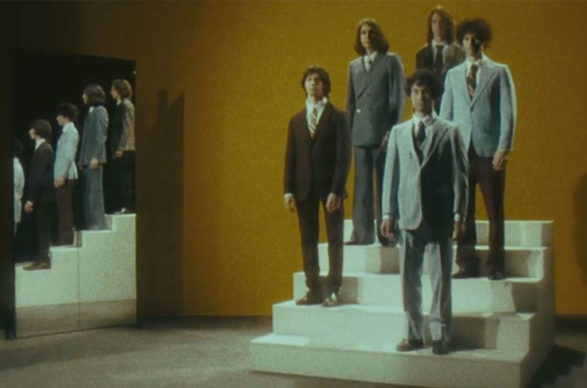
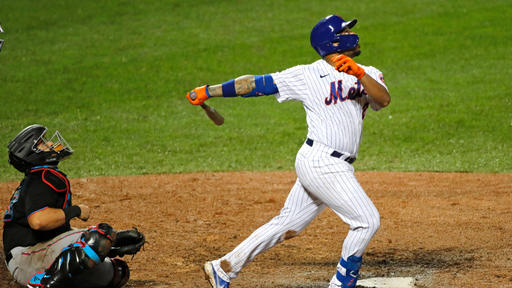

I’m gonna say what’s on my mind. Then I’ll walk out. Then I’ll feel fine.
The New Abnormal starts like Is This It: a slight, forgettable introduction leads into a wonderful guitar riff. On the Strokes’ debut, that introduction was a squeaky vibration; on their 2020 masterpiece, it’s an inorganic, pumping drumbeat, courtesy, I think, of drummer Fabrizio Moretti.
The first line on The New Abnormal’s first song, “The Adults Are Talking” is “They’ve been saying you’re sophisticated.” It is immediately clear what the album is about: what have *they* been saying? Are they the adults in question? Are they music critics, dismissing the Strokes on grounds of class? From the beginning, The Strokes have seen themselves in a war against their own image. They are not unlike MGMT in this regard, and the two are certainly comparable, especially when you look at the average middle and high school experiences of kids in the 2000s.
What must the Strokes do to capture our attention? They are, as they say, trying hard to get it. They have to be new — they want to be new. The Voidz were proof of that, at least for Julian Casablancas — a totally different project with a markedly different sound.
The chorus of “The Adults Are Talking” is perhaps its most revelatory moment. It is a dialogue, a discussion between fan and band. The Strokes don’t know if the audience wants them to evolve, because then they may never be the same band that that audience has grown to love. There is insecurity and uncertainty in this dilemma — love is not about doing something the exact same way as someone else. It’s about coevolution, growth, and change, and Casablancas is leaned back and smooth the whole way through. His vocals really shine through on the bridge, where he assures the audience that it isn’t to blame for this change — “It’s not your fault.”
The plucking guitars of Nick Valensi and Albert Hammond Jr., along with Nikolai Fraiture’s steady bass, help entrance the listener. It’s probably the fault of “The Adults Are Talking” that, when I listen to it, I feel compelled to listen to The New Abnormal in its entirety. Fortunately, it’s an extremely digestible listen that is somehow still densely-packed and consistently exciting. It’s among this swirl of excitement that “Selfless” comes in.
Yeah, I’m doing a play-by-play.
What a brooding intro. The fear of change is palpable in this song. Codependency is often misinterpreted as selflessness, and, at this point in the album, the band has not yet fully realized the gnarled relationship it has with its own past. The defiance of “I’m not listening, you hear?” emphasizes the chorus’ rejective nature. This song warns that sonic evolution risks the opening of Pandora’s Box, and implores the Strokes to stick with the classic garage rock sound they’re best known for.1.
The Strokes, however, reject this immediately and confidently with the echoing intro of “Brooklyn Bridge to Chorus.” Squealing guitars and layers of synthesizers ominously linger at the beginning of the song, and, though it may not really be the lyric, I like to think Casablancas sings “Don’t say something about my band.”
What about the opening line? What is meant by “One shot is never enough”? Think of that word — shot. One chance isn’t enough? Is there a murder attempt here? A drinking problem? No matter what, the beginning of this song emphasizes the conflict to come. It is destructive, and Casablancas bitterly reminds the listener of a lifetime of debts paid to the music world. He sings of betrayal from a friend — is this what the audience will do to him?
This uncertainty and the friend analogy bleed into the chorus, after a great, Phil Collins-style drum break.2 Here, the old sound fights back, raging against the changing of the guard. Guitars come out swinging, and the sound of the ‘80s, so clearly emulated in the song’s introduction, is decried as a false promise. And how can that be denied when those guitars are so punchy and so vital? The song feels empty when they leave.3
“Brooklyn Bridge to Chorus” was released, sans music video, only shortly before the release of The New Abnormal. Two other songs were also released beforehand: “At the Door” and “Bad Decisions.”
Holy hell, where to start. These two songs are astounding to me, for very different reasons. The Strokes were brilliant in this, intertwining two musical approaches in one another, serving as the crux of the album’s conflict. I still remember all the debates I had, both internally and with friends, over which song was better. We’ll start with “Bad Decisions.”4
Wham. Just like that, you are catapulted headfirst into guitars and that insidious drum. It is textbook Strokes, with everyone preforming at the top of their game. It’s got a catchy chorus that still conceals meaning within it, and, true to the ideas behind The New Abnormal, it references and reflects on previous albums, putting them into a combative stance with the line “Pick up your gun. Put up those gloves.”
I would be remiss to not discuss the music video for this song, which shows the Strokes in a sort of self-imitation loop. This artistic self-incest, as it were, is detrimental to the band in the video, as the members combust and explode in the song’s chaotic finale.
This is the paradox of “Bad Decisions” — it is in creating such a typical Strokes sound that the band has made a bad decision, as it were. This song is incredible: it’s danceable, it’s fluid, it’s fun. It is what the Strokes are trying to avoid.
It is blissful, isn’t it? An “Eternal Summer,” no?5 And yet, “Eternal Summer” reveals that nothing is forever. Like Ozymandias standing over his kingdom, the Strokes stare into the aether and ponder the impermanence of things. They do not want to fall into hubris.
And those sounds that we loved so much? Those shouts and yelps? Casablancas’ voice will erode with time — he even sounds older on the chorus of “Eternal Summer.” If the Strokes pursue a career of “Bad Decisions,” the magic will inevitably fade. The garage indie rock of Is This It cannot remain forever. I’ve basically said the same thing a few times now, but I think it bears repeating.
“Eternal Summer” is the alternative universe ending to the story of the Strokes. It’s what happens if they refuse to evolve. Screeching guitars sound like brakes, last ditch efforts to stop the crash before it’s too late. Maybe the crash will happen. Maybe the Strokes will see the light, the bright side. Maybe that’s okay.
But maybe it’s not, and that’s when we are blasted with synth yet again. “At the Door” is ethereal and haunting, and its ghostly nature is underlined by the specter of death. As the synth played, we are meant to wonder: is all hope lost? Will the Strokes be what they want to be?
And then that guitar comes in, changing the direction of the river while still maintaining its flow. The chord strikes, and the metaphorical door moves a little further.
Back to the synth. This is a fight for the soul of the band. How are you to be genuine to yourself while still growing as a person? Is there not sacrifice in change?
The Strokes aren’t trying to build a dynasty, as Casablancas himself sings. But it is hard to successfully evolve, especially when no Strokes album since Is This It has been as good.
Until now, of course. And it’s a weird transition from the interplanar, soul-bending magic of “At the Door” to “Why Are Sundays So Depressing?” The latter starts off as the soundtrack for walking into a bar, casual and cool as hell.
It is so content, so unregretful, that I was curious to see where the album would go from here. “At the Door” seemed to be closing the final chapter of the Strokes — is this song a victory lap?
Yes and no. Mostly no, though. It’s as if the Strokes were never famous at all, just people going about their lives in New York City. “Why Are Sundays So Depressing?” is from a universe where Is This It did okay and was quickly forgotten. The song is playful and fun. The singing is easygoing and relaxed, and the song sounds like something concocted by a bunch of friends in a New York City garage.
There is a whiff of destiny in the song’s outro. I mean, come on, was there ever really going to be a world where the Strokes weren’t a major indie rock success? The click was always in them. The music was always supposed to be this natural, this fun, this easy.
Fun and easy does not describe “Not the Same Anymore,” a dour track with Death Cab for Cutie instrumentals. But the energy shines through on the chorus. It goes beyond the personal. Really, it would be hard for anyone outside of the Strokes to understand their conflict. This song has an intimacy that takes comfort in how little it reveals itself, like the Strokes decided to write one song just for themselves. And they’ve earned it, haven’t they?
These two songs are both reactions to the change that stems out of “At the Door.” The first is happy to never see change, and the second is sad there ever was any. But both of these songs, as presented by the Strokes, are false realities. Yes, the good old days were exciting, carefree and fun. Yes, it’s a tragedy that things are so sad now. But to act as if the two are related, as if there’s some concept of the “good old days” that really exists? That, to the Strokes, is false. Life is about progress, not stability.
The New Abnormal is about understanding and respecting the past while recognizing its flaws and moving onto the future. And nowhere is this idea more clearly stated than on “Ode to the Mets.”
One last hurrah. And not for the Yankees — fuck the Yankees. This is for the Mets, New York’s second stringers. “Ode to the Mets” is a sublime reflection on everything we’ve discussed up to this point. I don’t want to talk about the lyrics too much — I don’t want to ruin that journey for you. Trust me, I’m tempted to blurt out my ideas of who “he” is in the chorus, or to talk about the absolute flex of “Learned all your tricks, wasn’t too hard.” I’ll refrain, for your sake. Trust me.
But I do want to discuss the music itself, because the intro really does read like a book’s closing chapter. It starts with that electric synth we’ve come to understand symbolizes the future. It seems that the Strokes have set their sights on change. We’ll never get the old them back.
But then that guitar creeps in. It clashes with the synth at first — really clashing, actually. And then it takes over before a ghostly organ jumps in. This is what you get from thesis and antithesis — synthesis.
I don’t think it’s a coincidence that the cover of The New Abnormal has such blocky yellows and blues. It is clearly reminiscent of the United States’ cover for Is This It, a yellow and blue swirl with a sort of fractal pattern. These two albums speak to each other through time.
The Strokes are a great band. Is This It is a great album. But there is something alive within The New Abnormal. It is human. It breathes and laughs and pains. It defies the band, ascending beyond them.
I fucking love it.
1I know I’m personifying the song, but these tracks really do feel like characters in a larger story. They are introduced to us one by one, and I, for one, can’t help but think about them in relation to each other.
2 Seriously, imagine the “In the Air Tonight” drums next time you listen to this one.
3There is a line in this song where Casablancas sings “Juliet, I adore.” I should say now, before moving on, that I’m not terribly interested in the bandmates’ personal relationships. There is certainly a lot to be said for their friendships and romantic relationships. However, I see little to gain from such analysis. I have never met any of these people, and to infer too much about their personal lives from the contents of their music strikes me as an invasion of privacy. For now, I am interested in the art.
4It’s still crazy to me that this was publicly debuted at a Bernie Sanders rally. I do think The New Abnormal has some pretty strong political messages, particularly regarding climate change. Perhaps I’ll write up an addendum.
5I’ll get to “At the Door” in a second.
6Stray, unattached thought: great job, Rick Rubin.